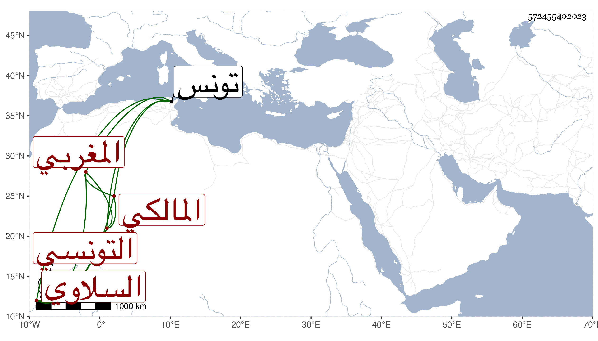

0902Sakhawi.DawLamic.ITO20230111-ara1.EIS1600.572455402023
Biography ID: 572455402023
784
أحمد السلاوي ثم التونسي المغربي المالكي تقدم في العربية وشارك في غيرها وانتفع به الفضلاء وهو ممن أخذ عنه عمر القلجاني بل قال لي الشهاب بن حاتم المغربي أنه أخذ عنه العربية قال وكان شيخا مسنا فقيها نحوبا ممن لقي ابن عرفة وغلب عليه الاشتهار بالعربية مع تقدمه في غيرها سيما الفقه ، مات في سنة ثلاث وسبعين بتونس في الطاعون .
